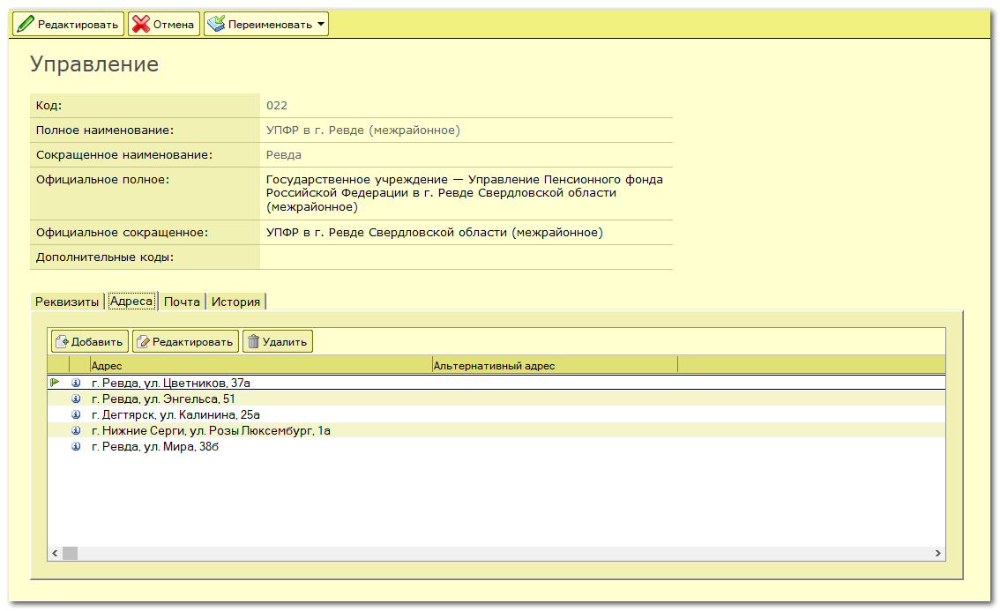
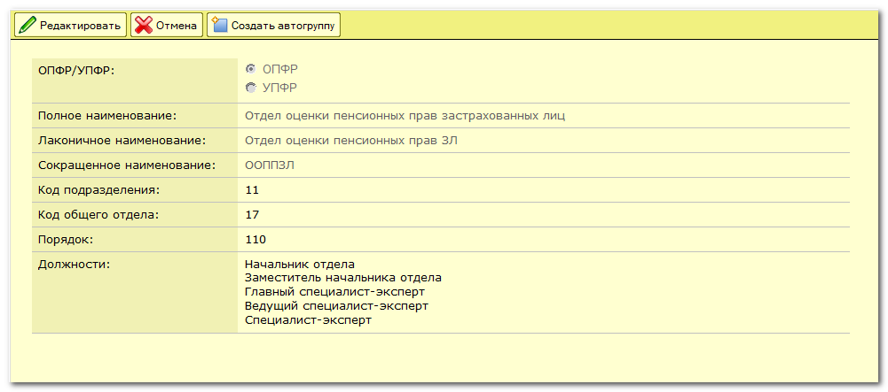
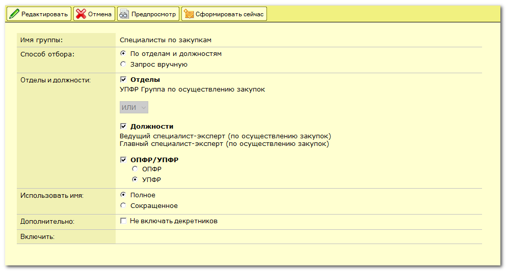
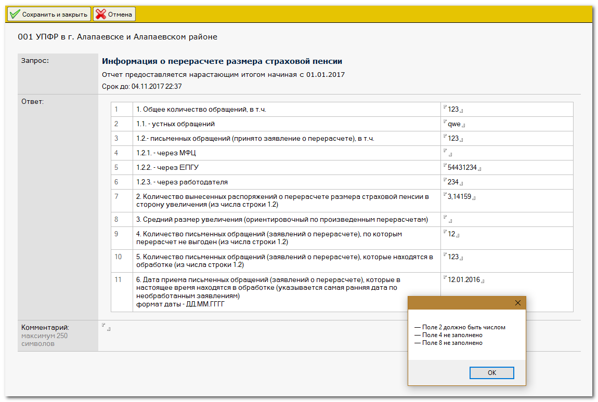
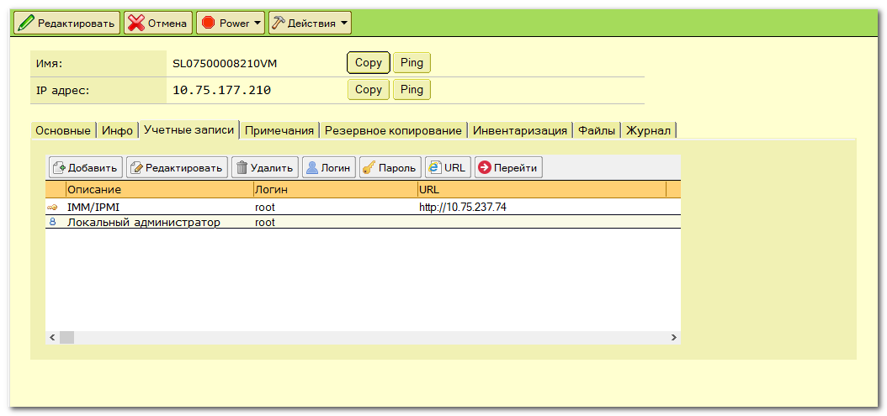
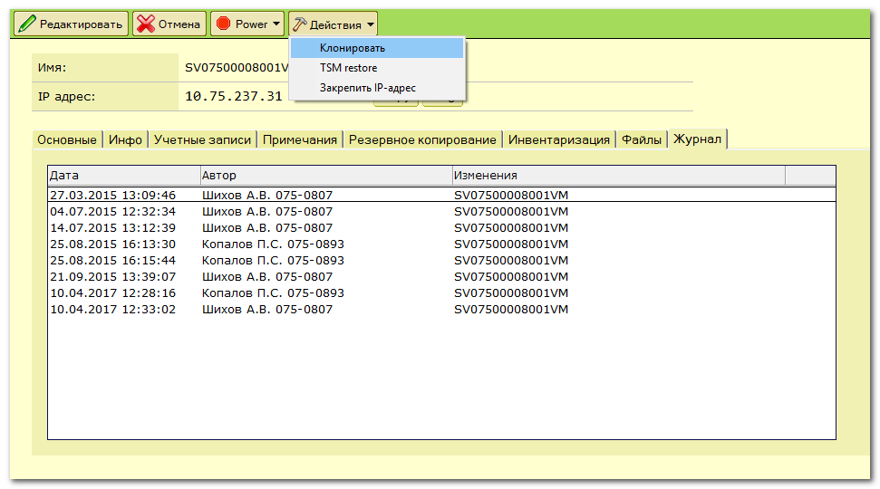
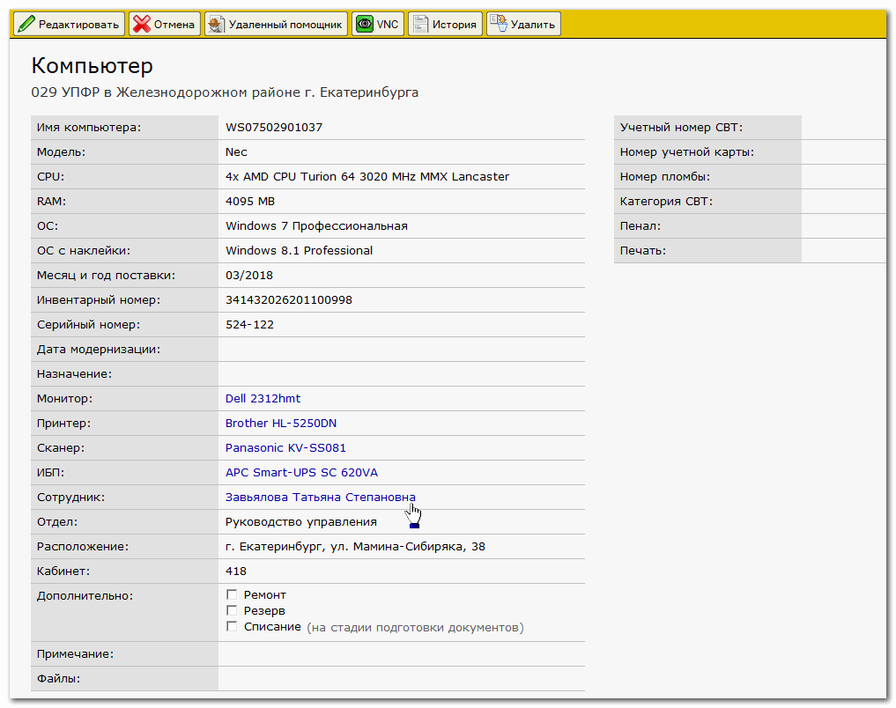
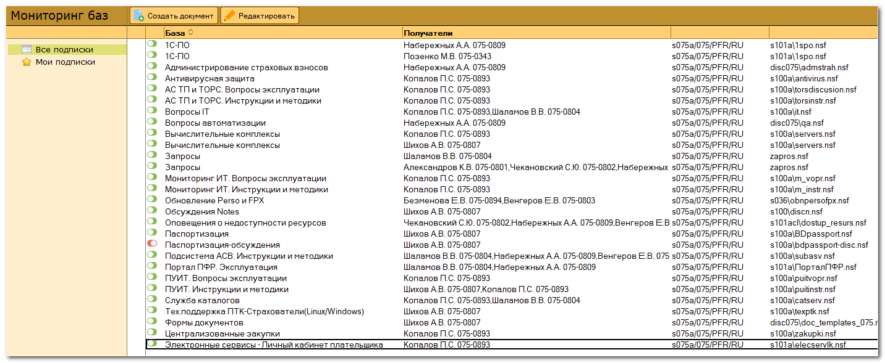
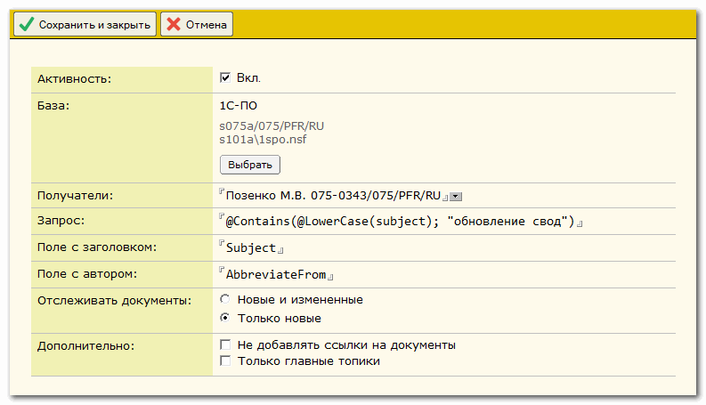
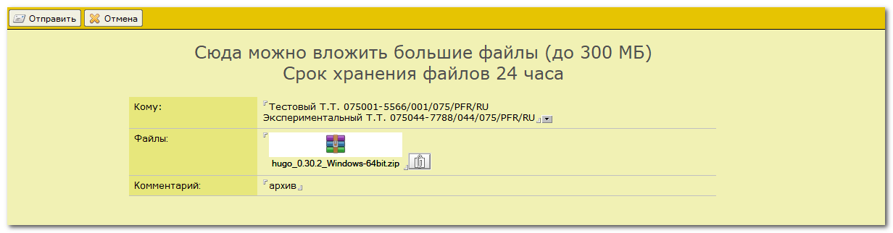

| github.com/shikhov |
Приложение для учета сотрудников предприятия. Хранится история изменений, автоматически создаются учетные записи в Active Directory, в почте, добавляются в группы и т.д. Также информация из этой базы широко используется в других приложениях.
Дизайн главной формы несколько устарел, но он создавался давно, а пользователи уже привыкли :)

Примеры справочников.





Автоматически формируемые группы. Условие отбора можно задать как непосредственным выбором отделов и должностей, так и запросом на языке формул


Специалисты автоматизации, не обладая админским правами, могут выполнять рутинные действия со своими пользователями. Таким образом, ошибки практически исключены.
На основе данных из базы формируется телефонный справочник в формате HTML

Приложение для сбора различной информации от управлений

Пример запроса

Заполнение ответа со стороны пользователя

Экспорт ответов в Excel

Настройки

Приложение для учета серверов и другого оборудования

Карточка сервера. Можно проделать некоторые быстрые действия - пропинговать, выключить, перезагрузить, открыть сеанс RDP и др.


Учетные записи, связанные с сервером. Можно быстро скопировать в буфер обмена имя пользователя, пароль и др.

Можно добавить фотографии и ссылки на другие документы

Журнал изменений документа

Учет IP-адресов

В базу также попадают уведомления от серверов

Переадресация сообщений от системы мониторинга Zabbix

Небольшое приложение для постановки задач

Пример задачи. Можно вести обсуждение в комментариях

Настройки. Уведомления обо всех событиях можно получать на почту и в Телеграм. Также прямо в Телеграме можно отвечать на комментарии, для чего написан небольшой бот на Java.


Приложение для учета вычислительной техники. Синхронизируется с Active Directory, обновляет информацию о железе, строит раличные отчеты

К компьютеру можно привязать сотрудника из БД "Кадры", мониторы, принтеры и т.д.

Поведение каждой формы настраивается в одном месте

Приложение для отслеживания новых документов в разных базах (конференции и любые другие)


Переадресация почты по расписанию (напрямую или через правило в почте)
Простой файлообменник
